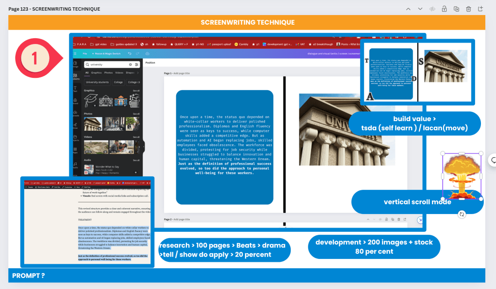
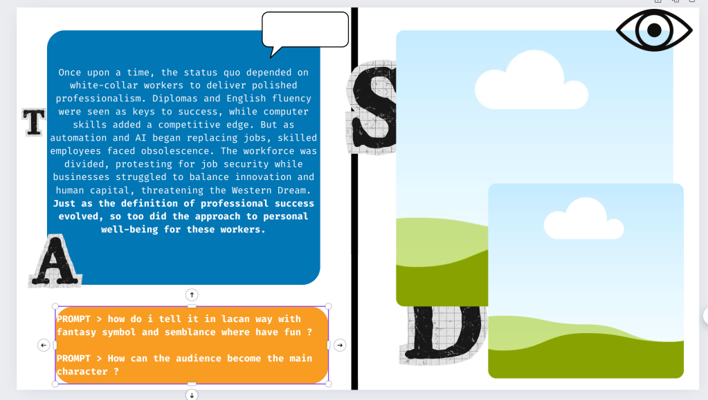
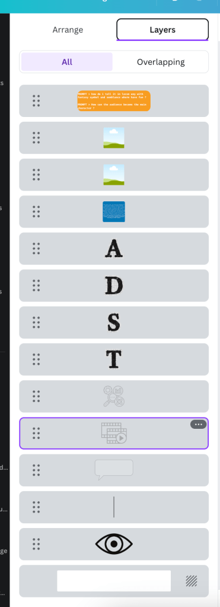
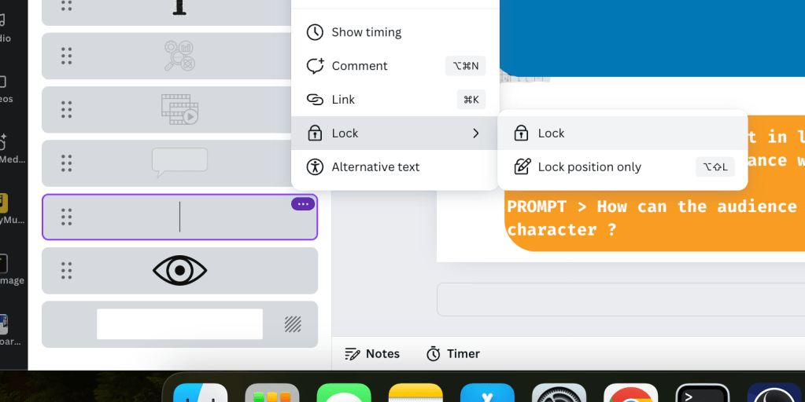
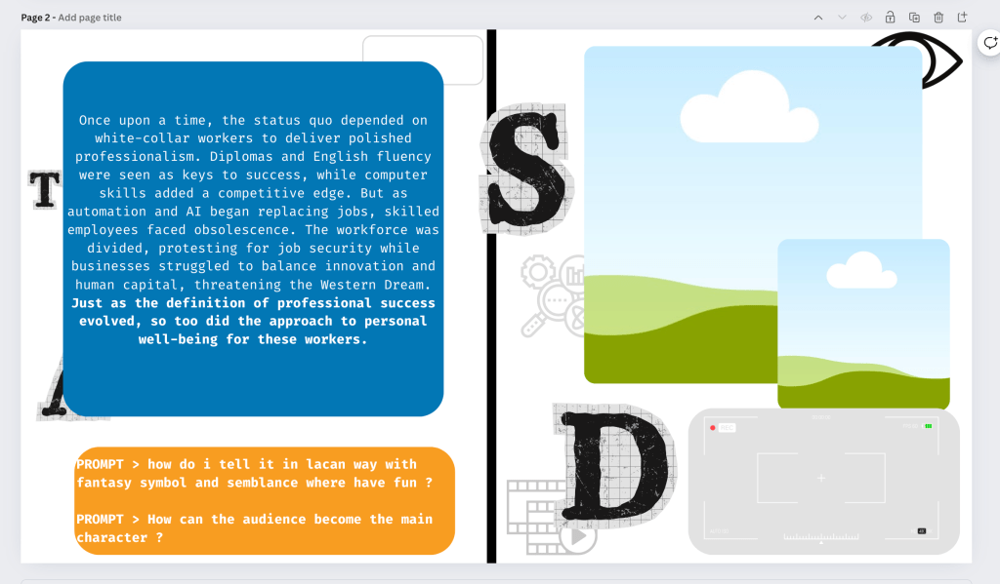
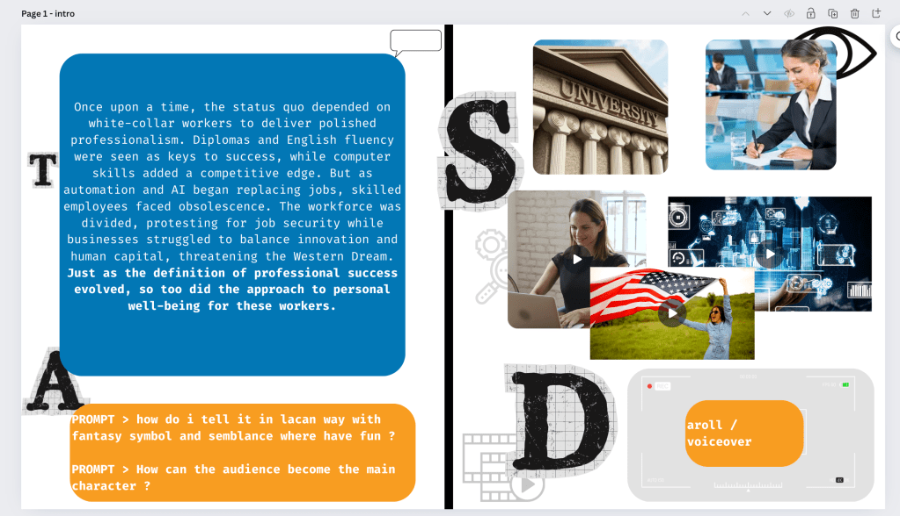

Enhancing Your Pre-Production Workflow with Canva Presentations in Scroll Mode
https://www.canva.com/design/DAGMBdbDu5Y/CDkl9TOahhX8gHaQikMiMA/edit?utm_content=DAGMBdbDu5Y&utm_campaign=designshare&utm_medium=link2&utm_source=sharebutton

In the world of television and film, the flow of dialogue and visuals is paramount. Screenwriters often use specific techniques to ensure that the narrative flows seamlessly, allowing characters' conversations and the visual storytelling elements to complement each other perfectly. As a content creator, using similar methods can significantly enhance your pre-production process. One powerful tool that can help you achieve this is Canva's presentation feature in scroll mode.
The Power of Scroll Mode in Canva
Canva is well-known for its versatility and user-friendly interface, making it a favorite among designers, marketers, and content creators. Its presentation feature, typically used in a slide-by-slide (timeline) format, can be adapted into a continuous scroll mode. This adaptation mimics the screenplay writing technique used in television, where scenes and dialogues flow vertically. Here’s how this method can help you streamline your dialogue and visual development.
Benefits of Using Scroll Mode for Pre-Production
-
Enhanced Flow of Dialogue:
-
In scroll mode, you can write your dialogue in a continuous vertical flow, similar to a screenplay. This allows you to see the progression of conversations without the interruption of flipping slides. It ensures that the dialogue feels natural and that the transitions between scenes are smooth.
-
Place holder for gpt prompts to helps to iterate on the script to make it work with audience

-
Integrated Visual and Dialogue Development:
-
Screenwriting isn't just about dialogue; it's also about visuals. By using Canva's scroll mode, you can place visual elements (like images, graphics, and sketches) alongside your dialogue. This integrated approach helps you visualize the scene as a whole, ensuring that the visuals enhance the storytelling.
-
Efficient Pre-Production Review:
-
Reviewing your work in scroll mode allows for a more cohesive examination of your project. You can easily scroll through the entire narrative, checking for consistency in dialogue and visuals. This holistic view helps identify any gaps or inconsistencies early in the pre-production phase.
Transparent > back order

-
Flexible Editing:
-
Canva’s drag-and-drop functionality makes it easy to rearrange elements within the scroll. You can quickly adjust dialogue, move visual components, or tweak layouts without the hassle of reordering slides. This flexibility is crucial during the iterative process of pre-production.
How to Use Canva Presentations in Scroll Mode
-
Set Up Your Canva Document:
-
Start by creating a new presentation in Canva. Instead of the default slide format, opt for a custom-sized canvas that mimics a long, vertical scroll. This might involve setting a larger height compared to the width.
-
Structure Your Content:
-
Begin adding your dialogue and visual elements in a linear, top-to-bottom fashion. Use text boxes for dialogue and various Canva elements (images, icons, shapes) for visuals. Ensure that each section of dialogue is paired with its corresponding visual cues.
notes section to be used
comments for tasks
-
Utilize Canva’s Tools:
-
Take advantage of Canva's extensive library of templates, fonts, and graphics. Customize these elements to fit the tone and style of your project. Use consistent headings, subheadings, and visual markers to distinguish different scenes or sections.
Lock none moving

-
Review and Adjust:
-
Scroll through your document regularly to review the flow of dialogue and visuals. Make adjustments as needed to ensure a seamless narrative. Invite collaborators to review and provide feedback within Canva, enhancing the collaborative pre-production process.
Do parts for your recordings

-
Finalize for Timeline Conversion:
-
Once satisfied with the vertical flow, you can start preparing your content for timeline mode if needed. Use the structured scroll mode document as a reference to create a more detailed and finalized timeline presentation.

Conclusion
Using Canva presentations in scroll mode is a game-changer for content creators aiming to enhance their pre-production workflow. This technique, inspired by screenwriting methods, allows for a fluid integration of dialogue and visuals, ensuring a cohesive narrative before moving into the detailed timeline phase. By adopting this approach, you can improve the clarity, consistency, and overall quality of your projects, making the transition to production smoother and more efficient.
Start leveraging Canva's scroll mode for your next project and experience the difference it makes in your creative process. Happy creating!
Imported from rifaterdemsahin.com · 2024